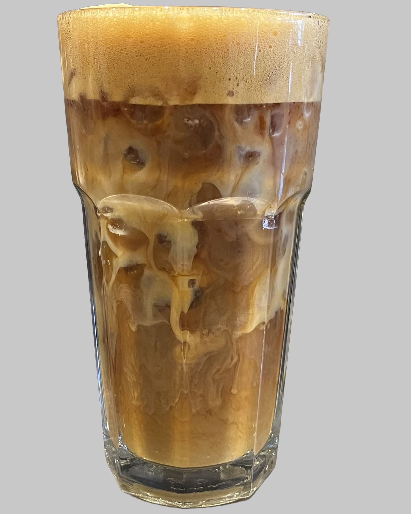
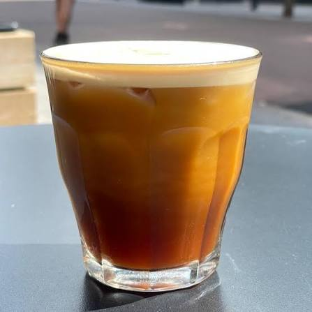

An espresso beverage that is gaining popularity, the shaken espresso is hot espresso that is poured over ice and shaken to create a frothy texture. Many of these beverages are served with a sweetener, such as simple syrup, and are served with milk or cream on top. The frothy texture is a trademark for a shaken espresso beverage, similar to the frothy texture of a cappuccino. It is a popular choice for those who enjoy cold espresso beverages.
Starbucks Aerocano

The Starbucks Aerocano is a new Korean espresso beverage that has been gaining popularity in the United States. It is made with espresso, ice, and water. It is served with a frothy texture on top, which is created by aerating the espresso, ice, and water using a steaming wand, until the ice is melted. After this, it is poured over ice and creates a cascading affect.
Learn more about how an aerocano is made by visiting this link! Starbucks Aerocano Video.